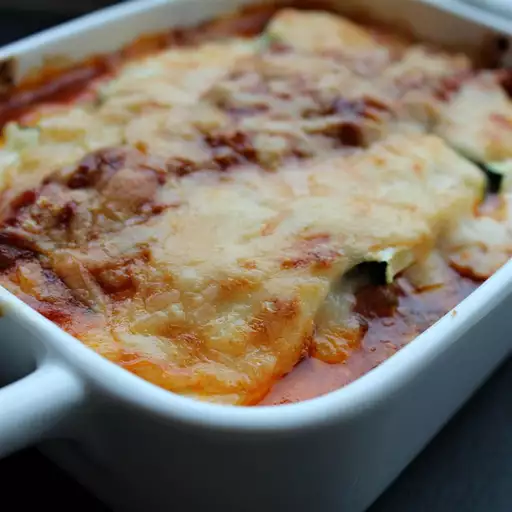

Zoodle Lasagne

One day, not having any gluten-free pasta on hand but lots of zucchini, I decided to use 'zoodles' instead of noodles. The whole family enjoyed it! I don't use any salt in the recipe because the cheeses already contain it. This dish is even better the next day and freezes well too.
ingridients
- 4 zucchini
- 1 ½ cups homemade or store-bought tomato sauce
- ⅔ cup shredded mozzarella cheese
- 1 ½ cups bechamel sauce
- 1 cup grated Parmigiano Reggiano cheese
- ¼ cup fresh basil, chopped
steps
- Preheat oven to 375 degrees F (190 degrees C).
- Cut zucchini lengthwise into 1/4-inch thick slices with a knife or mandolin.
- Pour 2 tablespoons tomato sauce on the bottom of a 9x13-inch baking dish. Arrange zucchini slices in a single layer, slightly overlapping, over tomato sauce.
- Top with a thin layer of mozzarella, 1/3 of the bechamel (see Editor's Note), 1/3 of remaining tomato sauce, 1/3 of the Parmigiano Reggiano cheese, and 1/3 of the basil. Repeat layers, topping with bechamel and Parmigiano Reggiano cheese.
- Bake in the preheated oven until sauce is bubbly and the top is golden brown, about 35 minutes. Allow to set until remaining liquid is absorbed, about 10 minutes.
GO BACK